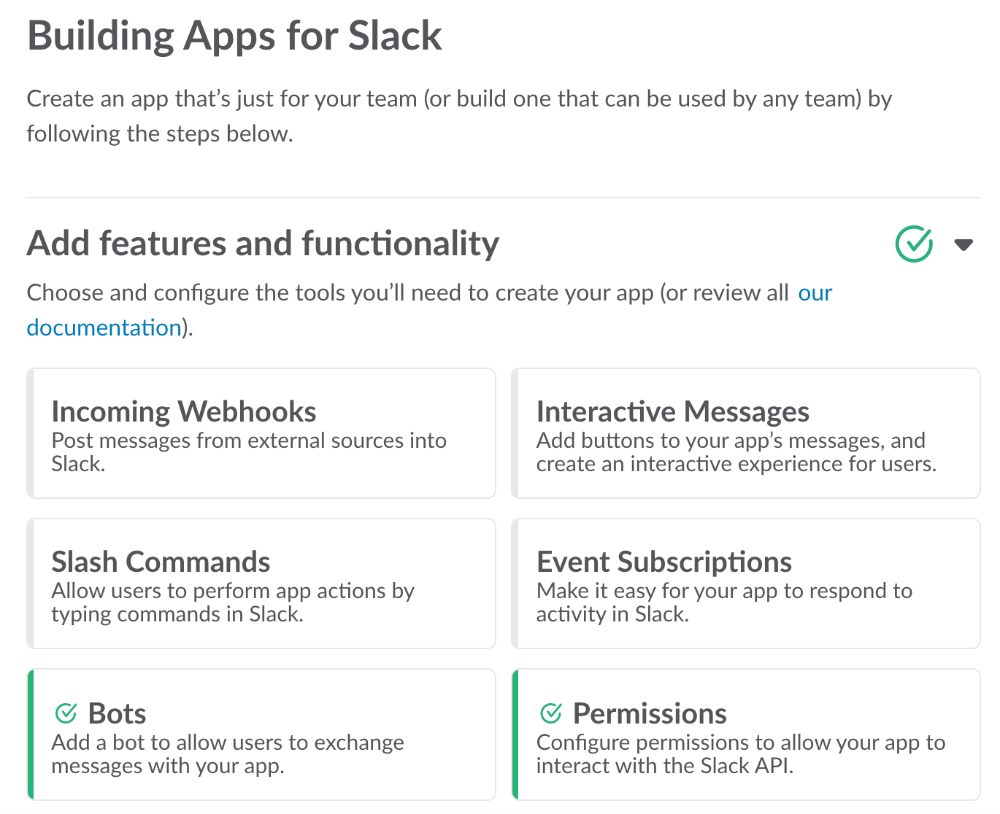
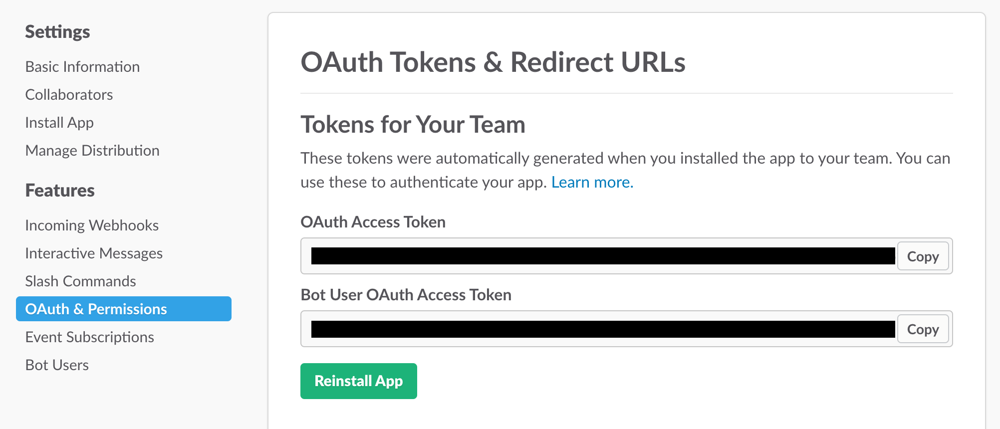
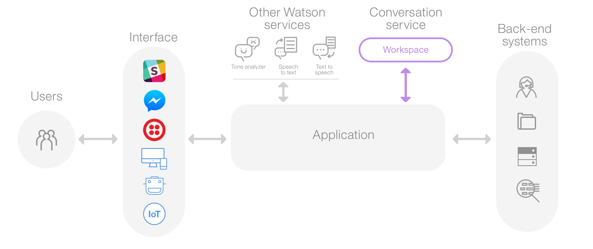

Today I am going to write a quick guide on how to create a “smart” yet very simple ChatBot for Slack. We will be using Botkit to take care of the logistics (Slack integration) and IBM Watson’s “Conversation” so that our bot can actually “understand” our messages and respond to them accordingly. At first sight this might seem somewhat complex, but it isn’t. Believe me ;)
In order to accomplish that, we will:
- Create a Slack app
- Setup the Botkit SDK
- Register into Bluemix to use IBM Watson’s Conversation
- Use Conversation together with Botkit
- Have fun
Create a Slack App
First of all we are going to create a Slack App in order to get a token that lets us start using Slack’s API. Note that you could also just create a bot, but it takes about the same time and offers many less features to play with.
Before anything you will need to create a development team, if you don’t have one yet. It is a requirement before being able to create any app. You will also be testing your ChatBot in this team later on.
Once you are ready to create the actual app, just go here and you should have all set up and be ready to start in a couple of clicks.
After that, you will need to 1) set a bot for your app and 2) install it to your development team.

Then we will get a token that allows us to play with the bot in our team. Save it for the next step.

Botkit setup
We will now start building the skeleton of the ChatBot with the help of Botkit, which is a very helpful tool that provides us with the essential building blocks for chat apps. Botkit currently supports the following messaging platforms:
- Slack
- Cisco Spark
- Facebook Messenger
- Twilio IP Messaging
- Microsoft Bot Framework
But we will only focus on Slack for now. The process is quite similar for all the other platforms.
First, a little bit of theory. Your bot (and any other API consumer) has three ways to communicate with your Slack team:
- RTM (real time messaging)
The Real Time Messaging API is a WebSocket-based API that allows you to receive events from Slack in real time and send messages as users. It’s sometimes referred to as simply the “RTM API”.
- Incoming webhooks
Incoming Webhooks are a simple way to post messages from external sources into Slack. They make use of normal HTTP requests with a JSON payload that includes the message text and some options. Message Attachments can also be used in Incoming Webhooks to display richly-formatted messages that stand out from regular chat messages.
- Slash commands
Slash Commands enable Slack users to interact with your app directly from Slack. (e.g.
/startwould be a slash command)
This example will focus on getting an input from Slack, processing it and then sending a response back. For this purpose, in my oppinion, the best choice is to use an RTM connection since it is more elegant and feels more natural than using slash commands. We will recognize what the user’s intent is by using artificial intelligence anyway rather than creating boring slash commands :)
Our goal here is to give the end-user the possibility to communicate with the bot as if it was a conversation with another human being and not only typing in CLI-like commands. Don’t get me wrong here, I actually love using the command line :)
Enough said. Let’s get our hands a little bit dirty by writing some code. We will create a tiny server on top of which the app will be running. I will be using Express, but you can use any framework that suits you best.
|
|
In order to start working with Botkit, just install it using NPM: npm install botkit --save. And then let’s write something very simple that allows us to directly connect the Botkit instance with our Slack team:
|
|
With this example whenever someone mentions the bot on a channel where the bot is present or whenever it receives a direct message, it will answer back “I have received your message”.
We could at this point create some logic that looks for specific keywords in the object message above, perform some actions according to its content and deliver a custom response. But this would be too boring. We want the bot to actually somehow understand what the incoming message means rather than only searching for some keywords. The process would be to slow and inefficient. This is where we will need the help of the great IBM Watson.
IBM Watson / Bluemix
IBM Watson offers some really cool AI and Machine Learning related services that are at the reach of everyone through IBM’s cloud development platform, Bluemix, which not only includes Watson, but has to offer many other services (quite similar to AWS). There is a nice SDK to use Watson on Node.js hosted on GitHub, which includes detailed documentation on how to use each of its “modules”. Yo can have a look at it here. We will only focus on the module called “Conversation”. For more information see here and here.
In order to start working with IBM Watson and Conversation, you will have to create an account at Bluemix (more infos here).
I will not get too much into detail on how to create a Conversation service and set it up in Bluemix. The official documentation does quite a good job on explaining that.
That’s basically how Conversation works:

First of all you will need to set a workspace (an instance of Conversation). Once you all set up you need to understand three main concepts of Conversation’s way of working:
- Intents: these define the purpose of the user’s input aka. “what does the user want?”. This is the first thing that Conversation looks for when it receives a message, like “Okay, I received this message. What is the user’s goal?”. Once the user’s intent is clear, Conversation decides which is the correct dialog flow for the user (we will see what a Dialog is right now).
- Entities: these are “keywords” that further define the user’s intent. For example, if the user sends “Where can I buy beer?”, the intent is identified by the question “Where can I buy…” and “beer” would be the entity.
- Dialog: the dialog is the whole conversation path. You can set rules that define how the conversation flows depending on the user’s inputs. It works like “if user has intention A and mentions entity X, then this is what Conversation should answer back. If then the user’s answer to that message holds entity Y, move to the next step and deliver this other answer”. Note that you can test and “teach” your Conversation instance in the same Dialog window, for a more exact input recognition.
You can experiment with different intents, entities and dialog flows and then let’s add Conversation to our code. To do that we are going to use IBM Watson’s SDK, which I mentioned above. Again, you can find it here. Note that you will need your workspace’s credentials to access the API. You can get them the following way:
To access the Conversation service REST APIs, your application needs to be able to authenticate with IBM® Bluemix® and connect to the right Conversation workspace. You’ll need to copy the service credentials and workspace ID and paste them into your application code.
You can access the service credentials and the workspace ID from your workspace by selecting the Menu menu and choosing Credentials.
You can also access the service credentials from your Bluemix dashboard.
Once you have your credentials we will start by writing a small library that lets us start using Conversation:
npm install watson-developer-cloud --save
|
|
And then let’s add it to our chat bot logic:
|
|
So as you see you could send a message to Watson and then just forward its response back to the user, or you could take the intent from Watson’s response object and do some logic yourself:
|
|
So as you see the possibilities here are only limited by your imagination. You can build lots of awesome stuff when using these tools together. Feel free to experiment and let me know which amazing projects you built.
Conclusion
I know that this is not an extensive step-by-step guide with lots of details, but that wasn’t exactly my goal. My aim here was to show you quickly an idea on how you could put these two tools together in order to build some cool projects and have fun with it.
As always I more than welcome any kind of feedback! Thanks for reading this content and see you around soon!